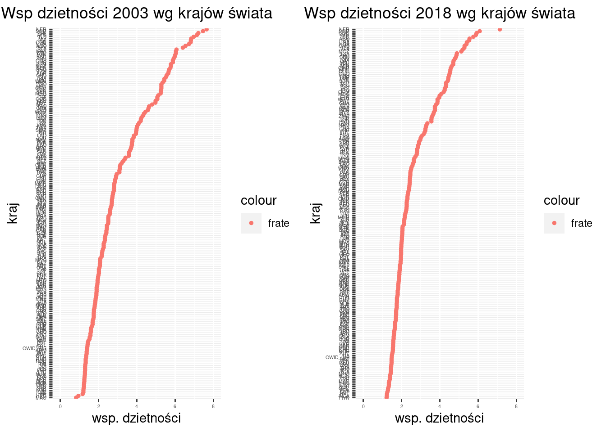
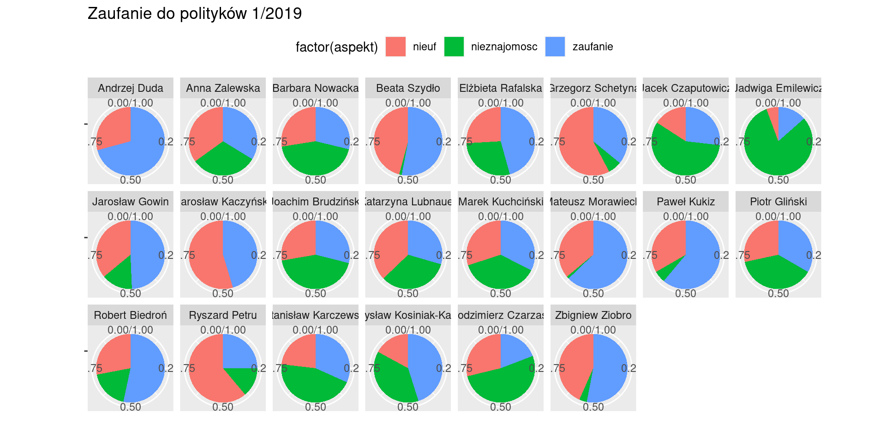
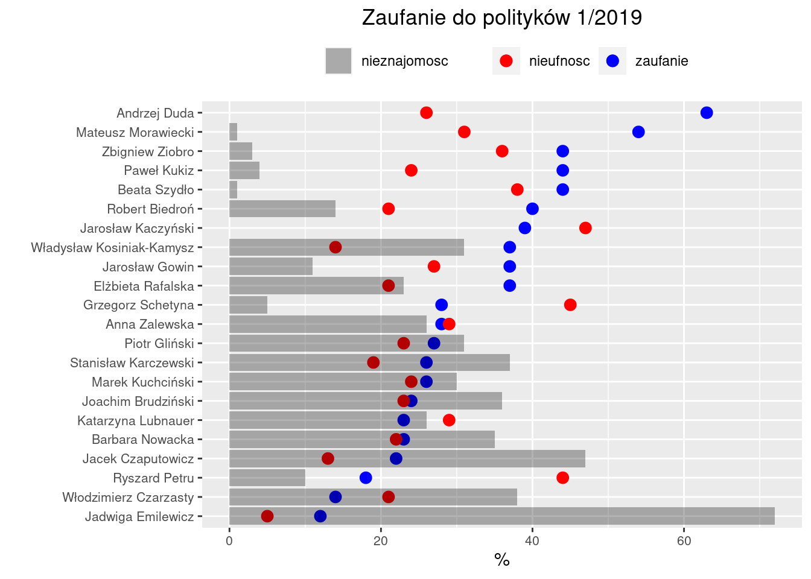

2 Analiza struktury
Analiza struktury – opisane zbiorowości ze względu na obserwowane w badaniu cechy zmienne.
Podstawę do oceny struktury zbiorowości stanowią dane w postaci szeregu szczegółowego, bądź też pogrupowane (szereg rozdzielczy)
Analizę prowadzić można na podstawie wykresów, szeregów rozdzielczych oraz (najczęściej) za pomocą odpowiednio obliczonych charakterystyk, zwanych parametrami (dla populacji) lub statystykami (dla próby).
Rozkład cechy – przyporządkowanie liczby wystąpień (liczebności, częstości lub prawdopodobieństwa) odpowiednim wartościom cechy zmiennej.
Analiza struktury obejmuje: określenie tendencji centralnej (tzw. miary położenia / wartość przeciętna, mediana, dominanta); zróżnicowanie wartości (rozproszenie); asymetrię (rozłożenie wartości wokół średniej); koncentrację (podział wartości cechy pomiędzy jednostki)
2.1 Tablice statystyczne
Tablica statystyczna to (w podstawowej formie) dwukolumnowa tabela zawierająca wartości cechy oraz odpowiadające tym wartościom liczebności.
Przykład 1: Tablica dla cechy niemierzalnej (nominalnej albo porządkowej)
Absolwenci studiów pielęgniarskich w ośmiu największych krajach UE w roku 2018
Jednostka badania: absolwent studiów pielęgniarskich w roku 2018,
Badana cecha: kraj w którym ukończył studia (nominalna)
Tablica: Absolwenci studiów pielęgniarskich w ośmiu największych krajach UE w roku 2018
| kraj | liczba |
|---|---|
| Belgium | 7203 |
| Germany | 35742 |
| Spain | 9936 |
| France | 25757 |
| Italy | 11207 |
| Netherlands | 9920 |
| Poland | 9070 |
| Romania | 18664 |
Źródło: Eurostat, tablica Health graduates (HLTH_RS_GRD)
Przykład 2: Tablica dla cechy mierzalnej (liczbowej; skokowej lub ciągłej)
Jeżeli liczba wariantów cechy jest mała tablica zawiera wyliczenie wariantów cechy i odpowiadających im liczebności. Jeżeli liczba wariantów cechy jest duża tablica zawiera klasy wartości (przedziały wartości) oraz odpowiadające im liczebności.
Co do zasady klasy wartości powinny być jednakowej rozpiętości.
Na zasadzie wyjątku dopuszcza się aby pierwszy i ostatni przedział były otwarte, tj. nie miały dolnej (pierwszy) lub górnej (ostatni) granicy
Tablica: Gospodarstwa domowe we wsi X wg liczby samochodów w roku 2022
| liczba samochodów | liczba gospodarstw | % |
|---|---|---|
| 0 | 230 | 39.3162393 |
| 1 | 280 | 47.8632479 |
| 2 | 70 | 11.9658120 |
| 3 i więcej | 5 | 0.8547009 |
| razem | 585 | 100.0000000 |
Źródło: obliczenia własne
Tablica dla cechy mierzalnej (liczbowej ciągłej–wymaga pogrupowania w klasy):
Przykład: Dzietność kobiet na świecie
Współczynnik dzietności (fertility ratio albo FR) – przeciętna liczba urodzonych dzieci przypadających na jedną kobietę w wieku rozrodczym (15–49 lat). Przyjmuje się, iż FR między 2,10–2,15 zapewnia zastępowalność pokoleń.
Dane dotyczące dzietności dla wszystkich krajów świata można znaleźć na stronie https://ourworldindata.org/grapher/fertility-rate-complete-gapminder) Zbudujmy tablicę przedstawiającą rozkład współczynników dzietności w roku 2018
Krajów jest 201. Wartość minimalna to 1.22 a wartość maksymalna to 7.13. Decydujemy się na rozpiętość przedziału równą 0,5; dolny koniec pierwszego przedziału przyjmujemy jako 1,0.
Zwykle przyjmuje się za końce przedziałów okrągłe liczby bo dziwnie by wyglądało gdyby koniec przedziału np. był równy 1,05 zamiast 1,0.
Liczbę przedziałów klasowych (\(k\)) wyznacza się na podstawie formuł:
\[k= 1 + 3,322 \log(n)\] albo
\[ k \approx 5 \log(n) \] albo
\[k\approx \sqrt{n}\]
rozpiętość przedziału (\(h\)) jest równa:
\[h = \frac{(x_\max - x_\min) }{k} \]
Należy tak zbudować szereg aby pogrupowany szereg był jednomodalny oraz aby nie było przedziału z zerową liczebnością.
Tablica: Kraje świata według współczynnika dzietności (2018)
| Wsp. dzietności | liczba krajów |
|---|---|
| (1,1.5] | 24 |
| (1.5,2] | 61 |
| (2,2.5] | 40 |
| (2.5,3] | 17 |
| (3,3.5] | 8 |
| (3.5,4] | 15 |
| (4,4.5] | 11 |
| (4.5,5] | 12 |
| (5,5.5] | 6 |
| (5.5,6] | 5 |
| (6,6.5] | 1 |
| (7,7.5] | 1 |
Źródło: https://ourworldindata.org/grapher/fertility-rate-complete-gapminder
Każda tablica statystyczna musi mieć:
Część liczbową (kolumny i wiersze);
- żadna rubryka w części liczbowej nie może być pusta (żelazna zasada); w szczególności brak danych należy explicite zaznaczyć umownym symbolem
Część opisową:
- tytuł tablicy;
- nazwy (opisy zawartości) wierszy;
- nazwy (opisy zawartości) kolumn;
- wskazanie źródła danych;
- ewentualne uwagi odnoszące się do danych liczb.
Pominięcie czegokolwiek z powyższego jest ciężkim błędem. Jeżeli nie ma danych (a często nie ma–z różnych powodów – należy to zaznaczyć a nie pozostawiać pustą rubrykę)
Liczebności cząstkowe (\(n_i\)) inaczej absolutne przedstawiają liczbę obserwacji (częstości) występowania wariantu cechy \(x_i\).
liczebności względne (stosunkowe) tzw. wskaźniki struktury (\(w_s\)) Przedstawiają udział części zbiorowości statystycznej do całości i są najczęściej wyrażone w procentach \(w_s = \frac{n_i}{N} \cdot 100\) Wskaźniki struktury są liczbami niemianowanymi.
| Wsp. dzietności | % krajów |
|---|---|
| (1,1.5] | 11.9402985 |
| (1.5,2] | 30.3482587 |
| (2,2.5] | 19.9004975 |
| (2.5,3] | 8.4577114 |
| (3,3.5] | 3.9800995 |
| (3.5,4] | 7.4626866 |
| (4,4.5] | 5.4726368 |
| (4.5,5] | 5.9701493 |
| (5,5.5] | 2.9850746 |
| (5.5,6] | 2.4875622 |
| (6,6.5] | 0.4975124 |
| (7,7.5] | 0.4975124 |
2.2 Rozkład empiryczny
Rozkład empiryczny zmiennej to przyporządkowanie wartościom zmiennej odpowiadających im liczebności lub częstości (czyli udziału procentowego w całości).
Jak taki rozkład wygląda?
Rozkład wiek laureatów nagrody Nobla (od 1901 roku do 2018, N=934). Rozkład wieku zawodników, którzy brali udział w turniejach o Puchar Świata w Rugby w latach 1999-2019 (N= 3649).

Rozkłady powiatów w Polsce wg powierzchni (stan na 2017, N=380); bez powiatów miejskich po prawej (N=380 - 66)

Rozkład powiatów Polsce wg liczby hoteli (stan na 2017, N=380) Rozkład elektrowni w Niemczech/Francji/Wlk Brytanii wg mocy (Mgw, stan na 2019, N=4586)

Dane dotyczące elektrowni pochodzą z bazy http://datasets.wri.org/dataset/globalpowerplantdatabase
Rozkłady liczebności i częstości mogą mieć postać rozkładów skumulowanych. Rozkład skumulowany to przyporządkowanie dla każdej wartości zmiennej odpowiadającej jej liczebności oraz liczebności wszystkich wartości mniejszych od tej wartości (potocznie: dla każdego x liczba obserwacji o wartości nie większej od x). Liczebność skumulowana dla wartości maksymalnej jest równa liczebności populacji (lub 100% dla rozkładu częstości.)
Przykład: wiek zawodników którzy brali udział w turniejach o Puchar Świata w Rugby w latach 1999-2019 (rozkład liczebności, skumulowany liczebności, częstości oraz skumulowany częstości)
## wiek N cum proc cumproc
## 18 1 1 0.027 0.027
## 19 8 9 0.219 0.247
## 20 37 46 1.015 1.261
## 21 86 132 2.358 3.619
## 22 155 287 4.250 7.869
## 23 239 526 6.553 14.423
## 24 296 822 8.116 22.539
## 25 354 1176 9.707 32.246
## 26 370 1546 10.145 42.391
## 27 381 1927 10.447 52.838
## 28 350 2277 9.597 62.435
## 29 337 2614 9.240 71.675
## 30 300 2914 8.226 79.901
## 31 226 3140 6.197 86.098
## 32 176 3316 4.826 90.924
## 33 142 3458 3.894 94.818
## 34 97 3555 2.660 97.477
## 35 51 3606 1.398 98.876
## 36 19 3625 0.521 99.397
## 37 12 3637 0.329 99.726
## 38 9 3646 0.247 99.973
## 39 0 3646 0.000 99.973
## 40 1 3647 0.027 100.000Czyli przykładowo było 381 zawodników w wieku 27 lat, albo 1927 zawodników w wieku 27 i mniej lat, albo zawodnicy w wieku 27 lat stanowili 10.447% wszystkich uczestników turnieju, albo zawodnicy w wieku 27 lat i mniej stanowili 52.838% wszystkich uczestników turnieju.
2.3 Rozkład normalny
Cecha mierzalna ciągła to na przykład wiek mierzony z nieskończoną dokładnością. Istnieje funcja określona formułą: \[f(x) = \frac{1}{s \sqrt{2 \pi}} \cdot \exp(-(x -m)^2/2s^2)\]
zwana rozkładem normalnym, która może interpolować wiele rozkładów empirycznych. Właściwością tej funkcji jest, że jej kształt jest zdefiniowany jedynie przez dwa parametry: \(m\) jest średnią wartością, a \(s\) jest odchyleniem standardowym (co to jest odchylenie standardowe wyjaśniamy dalej). Zatem mając rozkład empiryczny można policzyć średnią oraz odchylenie standardowe i w ten sposób wyznaczyć konkrety wariant rozkładu normalnego.
Przykładowo poniżej przedstawiono rozkład empiryczny wieku laureatów nagrody Nobla:

niebieska krzywa to rozkład Normalny (o średniej 59.8469274 oraz odchyleniu standardowym 12.3913637).
Wiele rozkładów empirycznych spotykanych w otaczającej nas rzeczywistości jest zbliżonych do rozkładu normalnego (wiek, waga, błąd pomiaru, długość itd), ale wiele zjawisk ekonomiczno-społecznych nie jest.
Przykładowo poniżej przedstawiono rozkład empiryczny miast w Polsce ze względu na liczbę mieszkańców (dane za Wikipedią)
Fioletowa krzywa to rozkład normalny o średniej 24465.0 oraz odchyleniu standardowym 81404.0. Aproksymacja jest taka-sobie (mówiąc oględnie…)
Tego typu rozkładu z kolei dobrze aproksymuje inny rozkład, określany jako logarytmiczno-normalny, w którym zamiast oryginalnej wartości cechy używa się logarytmu wartości. Rozkład wielkości miast aproksymowany rozkładem logarytmiczno-normalnym przedstawia następny przykład:
Jest mało dużych miast a dużo małych. Podobnie wyglądają rozkłady firm/ludzi względem przychodów/zysków czy elektrowni względem mocy zainstalowanej.
Reguła 3 sigm
około 68,3% jednostek zbiorowości mieści się w granicach 1 odchylenia standardowego
około 95,5% jednostek zbiorowości mieści się w granicach 2 odchyleń standardowych
około 99,7% jednostek zbiorowości mieści się w granicach 3 odchyleń standardowych:
Typowy obszar zmienności \(x_t\) będzie znajdował się w przedziale:
\[\bar x - S_x < x_t < \bar x + S_x \]
2.4 Wizualizacja danych i wykresy
Wykresy statystyczne są graficzną formą prezentacji materiału statystycznego, są mniej precyzyjne i szczegółowe niż tablice, natomiast bardziej sugestywne.
Rodzaje wykresów (podział ze względu na zastosowanie):
Jedna cecha
szeregi strukturalne: punktowe, słupkowe, histogram, pudełkowe, kołowe;
szeregi czasowe: liniowe, słupkowe, punktowe;
szeregi przestrzenne: kartogramy.
Dwie cechy
wykres rozrzutu (scatter-plot), wykres liniowy
2.4.1 Wykresy przedstawiające rozkład wartości jednej zmiennej
Celem jest pokazanie rozkładu wartości cechy w populacji: jakie wartości występują często a jakie rzadko, jak bardzo wartości różnią się między sobą. Jak różnią się rozkłady dla różnych ale logicznie powiązanych populacji (np rozkład czegoś-tam w kraju A i B albo w roku X, Y i Z). Do tego celu stosuje się: histogram (albo wykres słupkowy dla skal nominalnych), wykres punktowy, wykres pudełkowy oraz kołowy. Omówimy je na przykładach
2.4.2 Histogram
Współczynnik dzietności – przeciętna liczba urodzonych dzieci przypadających na jedną kobietę w wieku rozrodczym (15–49 lat). Przyjmuje się, iż FR między 2,10–2,15 zapewnia zastępowalność pokoleń.
Plik fertility_rate_2003_2018.csv (źródło: https://ourworldindata.org/grapher/fertility-rate-complete-gapminder) zawiera wartości współczynnika w roku 2003 oraz 2018 (czyli po 15 latach) dla 202 krajów.
Do oceny rozkładu wartości zmiennej służy histogram (por https://pl.wikipedia.org/wiki/Histogram). Jeżeli umieścimy obok siebie dwa (lub więcej) histogramy, możemy w ten sposób porównać (wizualnie) dwa rozkłady:
Kształt histogramu zależy od wyboru rozpiętości przedziału; im przedział węższy tym więcej słupków (ale ich wysokość będzie mniejsza). Poniżej przedstawiono ten sam rozkład dla rozpiętości przedziału równej odpowiednio 0,1, 0,25 oraz 0,5:

Dlatego jeżeli porównujemy różne rozkłady za pomocą umieszczonych obok siebie histogramów to powinny one mieć: tę samą rozpiętość przedziałów, te same skale na obu osiach.
Istnieją wzory na optymalną liczbę przedziałów ale nalepszą metodą jest metoda prób i błędów.
2.4.3 Wykres punktowy
Czasami jeżeli liczebność populacji nie jest za duża można spróbować przedstawić rozkład cechy na wykresie punktowym:

2.4.4 Porównanie wielu rozkładów
Jeżeli używamy histogramu to w zasadzie jedyną opcją jest wykreślenie każdego histogramu oddzielnie a następnie umieszczenie ich obok siebie. Wyjątkowo można spróbować wykreślić dwa na jednym wykresie (jeżeli program, którym się posługujemy umożliwia rysowanie kolorem przeźroczystym):
Łącznie na jednym wykresie (wykres punktowy):
2.4.5 Wykresy kołowe
Dane pochodzą z bazy danych Eurostatu są dostępne pod adresem https://appsso.eurostat.ec.europa.eu/nui/show.do?dataset=tour_occ_nim&lang=en
Nights spent at tourist accommodation establishments by non residents (id tabeli: tour_occ_ninat) czyli po polsku
Noclegi udzielone w turystycznych obiektach noclegowych (https://ec.europa.eu/eurostat/web/products-datasets/-/tin00175;
https://stat.gov.pl/metainformacje/slownik-pojec/pojecia-stosowane-w-statystyce-publicznej/1233,pojecie.html;
https://stat.gov.pl/en/metainformations/glossary/terms-used-in-official-statistics/1233,term.html)
Poniższy rysunek przedstawia typową tabelę (wielowymarową) z danymi
dotyczącymi wykorzystania miejsc noclegowych w krajach UE.
Nagłówek tabeli: TIME, GEO, Unit of measure, Classification of economic activities, Country of residencie definiuje cechy stałe zbiorowści statystycznej. Dla każdej cechy zwykle możliwy jest wybór z kilku dostępnych wariantów. Tabela na rysunku przedstawia dane roczne, dla krajów UE, dotyczące liczby noclegów w hotels, holidays and other short-stay accomodations, camping grounds, recreational vehicle parks and trailes parks (Hotele, Obiekty noclegowe turystyczne i miejsca krótkotrwałego zakwaterowania, Pola kempingowe, włączając pola dla pojazdów kempingowych i pola namiotowe; https://ec.europa.eu/eurostat/ramon/nomenclatures/index.cfm). Skrót NACE oznacza klasyfikację działalności gospodarczej, która służy do określenia jakie miejsca noclegowe są uważane za turystyczne (bo to nie jest oczywiste).

Liczbę noclegów dla 10 najczęściej odwiedzanych przez turystów krajów (oraz dla reszty oznaczonej jako Rest28) przestawiono na wykresie kołowym (https://pl.wikipedia.org/wiki/Diagram_ko%C5%82owy). Wielkość każdego wycinka koła (pole tego wycinka albo, kąt) jest proporcjonalna do liczby noclegów w danym kraju. Stąd wykres kołowy wizualizuje udział (popularnie zwany procentem) każdego wycinka w całości. Możemy dodać etykiety zawierające albo ów udział (prawy wariant na przykładzie poniżej); albo oryginalne liczby.
Wykres pokazuje dobitnie wszystkie wady wykresu kołowego: niemożliwe jest określnie różnic pomiędzy wycinkami, chybna że różnice te są ogromne. Np niemożliwe jest ustalenie czy jak bardzo różni się udział w UK i Francji. Albo czy liczba noclewgów w Austrii jest mniejsza/większa/równa niż w Niemczech, itd… Jeżeli dodamy liczby to sprawa się wyjaśni (prawy wariant) tylko po co wtedy rysunek?
Znacznie bardziej efektywne są wykresy punktowe (lewy) lub słupkowe (prawy):

Dużo lepiej widać różnice pomiędzy krajami. Niepotrzebna jest legenda. Nazwy krajów są na osi OY, liczba noclegów na osi OX. Na wykresie kołowym albo w wycinku mieściła się nazwa kraju albo procent nie było miejsca dla obu, stąd potrzebna była legenda (utrudniająca interpretację)
Wniosek: każdy wykres kołowy można i TRZEBA zamienić na słupkowy. Wykresów kołych nie należy stosować bo są znacznie gorszym sposobem wizualizacji informacji niż słupkowe.
2.4.6 Wykres pudełkowy
Uwaga: poniższy opis wykresu pudełkowego zawiera pojęcia jeszcze nie wyjaśnione (kwartyle, mediana, rozproszenie i IQR), które opisano dokładanie dalej, w punktach miary położenia/miary zmienności.
Konstrukcja pudełka na wykresie: górny/dolny bok równy kwartylom, a linia pozioma w środku pudełka równa medianie; linie pionowe (zwane wąsami) mają długość równą Q1 minus 1,5 IQR oraz Q3 plus IQR (Q1, Q3 to kwartyle, IQR to odstęp między kwartlowy; co to jest kwartyl, mediana i odstęp międzykwartylowy jest wyjaśnione poniżej); Linia pozioma w połowie pudełka określa przeciętny poziom zjawiska; wysokość pudełka/wąsów określa zmienność (im większe wąsy/wysokość tym większa zmienność). Obserwacje nietypowe (czyli takie których wartość jest albo mniejsza od \(Q1 - 1,5IQR\) albo większa od \(Q3 + 1,5IQR\))są zaznaczana indywidualnie jako kropki nad/pod wąsami.

Ze strony komitetu Noblowskiego pobrano listę Laureatów Nagrody Nobla
Wiek laureatów nagrody Nobla w momencie przyznania
nagrody (ponad 900 laureatów; plik nobel_laureates3.csv):

Najstarsi przeciętnie: ekonomia; najmłodsi przeciętnie: fizyka. Najmniejsze zróżnicowanie: ekonomia; największe zróżnicowanie: fizyka. Nie ma szans na nobla (koniec dolnego wąsa) przed pięćdziesiątką w ekonomii, przed 40-tką w literaturze, przed trzydziestką w chemii, medycynie i nagrodzie pokojowej.
Wykres niezwykle użyteczny do porównywania różnic w rozkładach wartości cechy.
2.4.7 Wykres skrzypcowy (wariant wykresu pudełkowego)
In general, violin plots are a method of plotting numeric data and can be considered a combination of the box plot with a kernel density plot. In the violin plot, we can find the same information as in the box plots: – median; – interquartile range; – the lower/upper adjacent values (defined as first quartile — 1.5 IQR and third quartile + 1.5 IQR respectively.)
Jako ilustrację przedstawmy rozkłady elektrowni (http://datasets.wri.org/dataset/globalpowerplantdatabase) w podziale na wykorzystywane paliwo: numlearnych, solarnych, na biomasę oraz węglowych.
Nukleane (rozkład w miarę symetryczny/jednomodalny.) Zwróćmy uwagę, że wykres skrzypcowy zachowuje kształt dzwonu tyle, że podwojonego: dwa szpiczaste końce i wybrzuszenie w środkowej części.
Solarne (rozkład skrajnie asymetryczny) Wykres skrzypcowy dla wykresu asymetrycznego ma tylko jeden szpic.
Na biomasę (także asymetryczny ale o asymetrii mniejszej niż poprzedni)
Węglowe (wielomodalny/asymetria lewostronna) Kształt wykresu skrzypcowego dla rozkładu wielomodalnego jest pofalowany.
Współczynnik dzietności w latach 2003/2018 oraz współczynniki dzietności na poszczególnych kontynentach (w roku 2018)

2.4.8 Przykład: Zaufanie do Polityków
CBOS realizuje co najmniej 12 razy w roku sondaż “Aktualne problemy i wydarzenia”, na reprezentatywnej ok. 1000-osobowej próbie dorosłych mieszkańców Polski. (cf https://www.cbos.pl/PL/trendy/trendy.php?)
Częścią tych badań jest badanie zaufania do Polityków. Które to zaufanie jest mierzone w taki sposób, że respondenci odpowiadają na jedno pytanie, które brzmi: Ludzie aktywni publicznie – swoim zachowaniem, tym, co mówią, do czego dążą – budzą mniejsze lub większe zaufanie. Przedstawimy teraz Panu(i) listę osób aktywnych w życiu politycznym naszego kraju. O każdej z nich proszę powiedzieć, w jakim stopniu budzi ona Pana(i) zaufanie. Odpowiadając, proszę posłużyć się skalą, na której –5 oznacza, że osoba ta budzi w Panu(i) głęboką nieufność, 0 – że jest ona Panu(i) obojętna, a +5 oznacza, że ma Pan(i) do tej osoby pełne zaufanie. Oczywiście może się Pan(i) posługiwać innymi ocenami tej skali. Jeżeli kogoś Pan(i) nie zna, proszę powiedzieć
Odsetki badanych wyrażających zaufanie – wskazania punktów od +1 do +5, nieufność – wskazania punktów od –1 do –5, obojętność – 0
W zestawieniu CBOS pomija odpowiedzi „trudno powiedzieć” i odmowy odpowiedzi.
Analiza CBOS (przykład raportu jest
w pliku zaufanie_do_politykow_CBOS_2019.pdf) posługuje się
skumulowanym wykresem słupkowym (stacked barchart):

Skumulowany wykres słupkowy jest w zasadzie jest wykresem kołowym, tyle że zamiast kółek są prostokąty (cf https://eagereyes.org/techniques/stacked-bars-are-the-worst). Można łatwo porównywać łączną wartość albo wartość przedstawioną za pomocą pierwszego słupka (bo mają wspólną linię dla wartości zero, common baseline). Pozostałe słupki nie są oparte o wspólną linię zerowej wartości i w związku z tym porównanie ich wartości jest trudne. W przykładzie każdy słupek ma 3 kategorie a już jest trudno wskazać czy nieufność do Pawła Kukiza jest większa czy mniejsza od nieufności do Roberta Biedronia. Gorzej wykres sugeruje, że nieufność do Biedronia jest większa niż do Kukiza, podczas gdy w rzeczywistości jest odwrotnie. Podobnie trudno jest określić dla konkretnego polityka czy zaufanie jest większe od nieufności albo o ile jest większe (lub mniejsze)..
Można trochę poprawić wykres jeżeli wartości podzielimy na ujemne/dodatnie (wykres po prawej). Można ale po co? Najlepiej po prostu wykreślić oddzielne wykresy słupkowe dla każdej kategorii czyli wykreślić słupki z każdej kategorii oddzielniem na wspólnej linii zera:

Wykres kołowy kolejny raz jest najmniej przydatny. Niemożliwe albo bardzo trudne jest zorientowanie się w różnicach odsetka zaufania/nieufności/nieznajmości dla poszczególnych kandydatów:

Można spróbować połączyć wykres punktowy z wykresem słupkowym:

Patrząc na słupki można ocenić nieznajomość; patrząc na kropki zaufanie/nieufność. W porówaniu do skumulowanego wykresu słupkowego zarówno łatwe jest porównanie poziomów każdego czynnika dla wszystkich ocenianych polityków, jak i porównanie dla konkretnego polityka (czy zaufanie jest większe od nieufności albo o ile jest większe/mniejsze). Ale uwaga jeżeli liczba wymiarów będzie większa niż trzy wykres straci na przejrzystości zamieniając się w chmurę różnokolorowych kropek.
2.4.9 Przykład: Marimekko mosaic chart
Przykład: Kraje wg emisji C02 (wysokość prostokąta jest równa emisji per capita; szerokość liczbie ludności). Pola prostokątów odpowiadają globalnej emisji, wysokości emisji na głowę. Prostokąty są uszeregowane wg. emisji per capita, co utrudnia porówania wielkości globalnych. Ale i tak widać, że nie tylko Polska emituje mniej niż Niemcy ale przeciętny Niemiec emituje więcej niż przeciętny spalający na potęgę czarny węgiel Polak.

2.5 Analiza parametryczna
2.5.1 Miary położenia
Miary przeciętne charakteryzują średni lub typowy poziom wartości cechy. Są to więc takie wartości, wokół których skupiają się wszystkie pozostałe wartości analizowanej cechy.

Na rysunku po lewej mamy dwa rozkłady różniące się poziomem przeciętnym (czerwony ma przeciętnie mniejsze wartości niż turkusowy). Są to rozkłady jednomodalne, tj. wartości skupiają się wokół jednej wartości. Dla takich rozkładów ma sens obliczanie średnich.
Na rysunku po prawej mamy rozkłady nietypowe: wielomodalne (turkusowy) lub niesymetryczne (wartości skupiają się nie centralnie ale po prawej/lewej od środka przedziału zmienności).
W świecie rzeczywistym zdecydowana większość rozkładów jest jednomodalna.
Klasyczne (średnia arytmetyczna) i pozycyjne (mediana, dominanta, kwartyle, kwantyle, decyle).
Średnia artmetyczna (Mean, Arithmetic mean). Oblicznie średniej dla szeregu prostego (suma wartości podzielona przez liczbę składników sumy):
\[ \bar x = \frac{\sum_{i=1}^N x_i} {N} \] Dla szeregu rozdzielczego punktowego:
\[ \bar x = \frac{\sum_{i=1}^N x_i n_i} {N} \] Dla szeregu rozdzielczego przedziałowego:
\[ \bar x = \frac{\sum_{i=1}^N \dot x_i n_i} {N} \]
Mediana (Median, kwartyl drugi) dzieli zbiorowość na dwie równe części; połowa jednostek ma wartości cechy mniejsze lub równe medianie, a połowa wartości cechy równe lub większe od Me. Stąd też mediana bywa nazywana wartością środkową.
Właśności mediany – odporna na wartości nietypowe (w przeciwieństwie do średniej)
Przykład: współczynnik dzietności na świecie w roku 2018
Średnia wartość współczynnika 2.6778607; mediana – 2.2. Interpretacja średniej: wartość współczynnika dzietności wyniosła 2.6778607 dziecka. Uwaga: średnia dzietność na świecie nie wynosi 2.6778607 (bo kraje różnią się liczbą ludności). Interpretacja mediany: dzietność kobiet w połowie krajów na świecie wynosiło 2.2 i mniej. Uwaga: dzietność połowy kobiet na świecie wyniosła 2.2 i mniej jest niepoprawną interpretacją (różne wielkości krajów.)
Generalna uwaga: interpretacja średniej-średnich często jest nieoczywista i należy uważać. (a współczynnik dzietości jest średnią: średnia liczba dzieci urodzonych przez kobietę w wieku rozrodczym. Jeżeli liczymy średnią dla 202 krajów, to mamy średnią-średnich). Inny przykład: odsetek ludności w wieku poprodukcyjnym wg powiatów (średnia z czegoś takiego nie da nam odsetka ludności w wieku poprodukcyjnym w Polsce, bo powiaty różnią się liczbą ludności.)
Dominanta (Mode, Moda, wartość modalna, wartość najczęstsza) jest to wartość cechy statystycznej, która w szeregu empirycznym występuje najczęściej. W szeregach prostych i rozdzielczych jest to wartość cechy, której odpowiada największa liczebność (częstość).
Kwartyle (Q, quartile, \(Q_1\), \(Q_3\)) – wartości cechy dla jednostek dzielących populację na cztery równe części. Kwartyl pierwszy dzieli populację w proporcji 25/75%, kwartyl drugi w proporcji 50/50%, a kwartyl trzeci w proporcji 75/25%. kwantyle (D, wartości dziesiętne), podobnie jak kwartyle, tyle że dzielą na 10 części. Centyle (P, wartości setne), podobnie jak kwantyle tyle że dzielą na 100 części. Przykładowo wartość 99 centyla i mniejszą ma 99% jednostek w populacji.
2.5.2 Miary zmienności
Wariancja, odchylenie standardowe, odchylenie przeciętne, współczynnik zmienności (Pearsona)
Wariancja (variance) jest to średnia arytmetyczna kwadratów odchyleń poszczególnych wartości cechy od średniej arytmetycznej zbiorowości.
Oblicznie wariancji dla szeregu prostego:
\[ S^2 = \frac{1}{N} \sum_{i=1}^N (x_i - \bar x)^2 \]
często zamiast dzielenie przez \(N\) dzielimy przez \(N-1\).
Dla szeregu rozdzielczego punktowego:
\[ S^2 = \frac{1}{N} \sum_{i=1}^N (x_i - \bar x) n_i^2 \] Dla szeregu rozdzielczego przedziałowego:
\[ S^2 = \frac{1}{N} \sum_{i=1}^N (\dot x_i - \bar x) n_i^2 \]
Odchylenie standardowe (standard deviation, sd) jest pierwiastkiem kwadratowym z wariancji. Parametr ten określa przeciętne zróżnicowanie poszczególnych wartości cechy od średniej arytmetycznej.
Współczynniki pozycyjne. Odchylenie ćwiartkowe (Q, midhinge): \[ Q = \frac{Q_3 - Q_1}{2} \] i rozstęp ćwiartkowy (interquartile range, IQR): \[ R_Q = Q_3 - Q_1 \]
Współczynnik zmienności jest ilorazem bezwzględnej miary zmienności cechy i średniej wartości tej cechy. W analizie struktury korzysta się z różnych miar położenia i zmienności, dlatego są współczynniki zmienności klasyczne i pozycyjne.
Współczynniki klasyczne:
\[ V_s = \frac{s}{\bar x}\qquad \textrm{lub}\qquad V_d = \frac{d}{\bar x} \] pozycyjne \[ V_Q = \frac{Q_3 - Q_1}{\textrm{Me}} \] albo (Quartile coefficient of dispersion): \[ V_Q = \frac{Q_3 - Q_1}{Q_3 + Q_1} \]
Współczynnik zmienności jest wartością niemianowaną. Wartości liczbowe współczynników zmienności najczęściej są podawane w procentach. Przyjmuje się, że jeżeli współczynnik zmienności jest poniżej 10%, to cechy wykazują zróżnicowanie statystycznie nieistotne. Duże wartości tego współczynnika świadczą o dużym zróżnicowaniu, a więc niejednorodności zbiorowości.
Współczynnik zmienności stosuje się zwykle w porównaniach, gdy chce się ocenić zróżnicowanie: kilku zbiorowości pod względem tej samej cechy, tej samej zbiorowości pod względem kilku różnych cech.
UWAGA: ten współczynnik może dawać dziwne rezulataty jeżeli średnia wynosi zero (niezdefiniowany), jest ujemna lub jest bliska zera; zwłaszcza jeżeli użyjemy skali przedziałowej. Przykład:
Średnie temperatury miesięczne. Sopot, Polska
mc 2010 2011 2012 2013 2014 2015 2016 2017 2018 2019 Tm Sm Vm
01 -5.36 -0.41 -0.37 -1.77 -2.27 1.53 -2.39 -1.16 0.62 -0.31 -0.74 2.23 -299.54
02 -1.08 -3.19 -3.31 -0.13 2.55 1.44 2.72 -0.08 -2.56 3.27 -0.04 2.36 -6658.52
03 3.65 2.83 5.04 -0.87 6.09 4.91 4.09 5.04 -0.07 5.26 3.60 2.21 61.57
04 7.47 9.47 7.59 6.55 9.37 7.94 8.30 6.70 10.43 8.62 8.25 1.19 14.37
05 10.85 12.78 13.11 14.10 12.82 12.01 14.37 12.77 15.40 11.56 12.98 1.29 9.95
06 16.06 17.65 14.91 17.15 15.37 15.36 17.62 16.18 17.51 20.03 16.78 1.45 8.65
07 20.49 18.11 18.07 18.53 20.51 17.52 18.51 16.84 20.20 17.17 18.59 1.29 6.94
08 18.71 17.58 17.66 18.11 17.70 19.47 17.36 17.53 19.46 18.65 18.22 0.76 4.15
09 13.03 14.79 13.91 12.38 14.41 14.16 15.53 13.47 15.04 13.69 14.04 0.90 6.44
10 6.24 9.27 8.23 9.93 8.78 7.78 7.76 10.05 10.17 9.70 8.79 1.21 13.81
11 4.54 4.54 5.03 5.50 4.89 6.01 3.51 4.76 4.88 5.27 4.89 0.63 12.83
12 -5.03 3.00 -1.70 3.40 1.02 4.56 2.67 2.18 2.05 3.54 1.57 2.73 174.09
Tm -- średnia dla lat 2010-2019
Sm -- odchylenie standardowe dla lat 2010--2019
Vm -- współczynnik zmienności tj Vm = Sm / Tm * 100Dla lutego współczynnik zmienności przymuje absurdalną wartość 6 tysięcy (procent). Do tego na minus.
2.5.3 Miary asymetrii
Asymetria (skewness), to odwrotność symetrii. Szereg jest symetryczny jeżeli jednostki są rozłożone ,,równomiernie’’ wokół wartości średniej: \[ \bar x = \textrm{Me} = D \] Asymetria prawostronna, lewostronna; wskaźnik asymetrii (skośności), współczynniki asymetrii (skośności).
Moment trzeci centralny – średnia arytmetyczna z podniesionych do potęgi trzeciej odchyleń wartości cechy od średniej arytmetycznej
\[ \mu_3 = \frac{1}{N} \sum_{i=1}^N (x_i - \bar x)^3 \] szereg rozdzielczy punktowy
\[ \mu_3 = \frac{1}{N} \sum_{i=1}^N (x_i - \bar x)^3 n_i \] szereg rozdzielczy przedziałowy
\[ \mu_3 = \frac{1}{N} \sum_{i=1}^N (\dot x_i - \bar x)^3 n_i \]
jeżeli \(\mu_3 = 0\) szereg symetryczny, \(\mu_3 > 0\) asymetria dodatnia (prawostronna), \(\mu_3 < 0\) asymetria ujemna (lewostronna)
Moment trzeci względny określa siłę i kierunek asymetrii: \[ g_1 = \frac{\mu_3}{s^3} \] Na podstawie badań empirycznych: \(-2 < g_1 < 2\), w skrajnych przypadkach może przekraczać ten przedział.
Współczynnik asymetrii (skośności) oparty na odległościach między średnimi (K. Pearson). \[ W_s = \frac{\bar x - D}{s} \] rzadziej używa się: \[ W_s = \frac{\bar x - \textrm{Me}}{s} \] Współczynnik asymetrii (skośności) oparty na odległościach między kwartylami lub decylami: \[ W_{sq} = \frac{(Q_3 - Q_2) - (Q_2 - Q_1)}{Q_3 - Q_1} \]
2.5.4 Miary koncentracji
Koncentracja – nierównomierny podział wartości cechy w zbiorowości.
Współczynnik Giniego i Krzywa Lorenza
Krzywa Lorenza jest funkcją określoną na zbiorze liczb dodatnich L(Cn), gdzie Cn jest kumulowaną liczebnością zaś L kumulowaną wartość cechy. Zwykle wartości kumulowane są przedstawione w procentach co pozwala na zgrabną interpretację w stylu: 20% jednostek ma 5% łącznej wartości cechy albo 50% rolników posiada 15% łacznych areałów, itp.

przekątna łącząca lewy-dolny, prawy-górny wierzchołek jest nazywana linią równomiernego rozkładu (koncentracji równomiernej, line of equality). Współczynnik Giniego to iloraz pola A do sumy pół A+B.
Im większa koncentracji, tym krzywa Lorenza jest bardziej wygięta, a wartość współczynnika Ginego większa (maksymalną wartością jest 1)
Współczynnik HH
Innym współczynnikiem koncentracji jest współczynnik Herfindahla-Hirschmana (HH-Index, https://en.wikipedia.org/wiki/Herfindahl%E2%80%93Hirschman_Index):
\[HH = \sum_{i=1}^N x_i^2, \quad\mathrm{gdzie}: \sum_{i=1}^N x_i =100%\] Maksymalną wartością tego współczynnika jest 10000, wartości większe od 1800 świadczą o znacznej koncentracji.